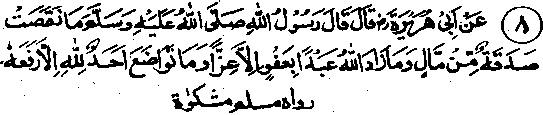

Chapter One · Section (b): Ahadith on the virtues of spending for the cause of Allah
6. Sadaqah does not decrease wealth

Hadith 8
Rasulullah Sallallaho alaihe wasallam has said, "Sadaqah does not cause a decrease in wealth and to forgive an offender enhances the honour of the for-giver. Whoever humbles himself for the pleasure of Allah Jalla Shanohu, he is exalted by Haq Ta'ala Shanohu."
Note: This Hadith contains three subjects: first, on the face of it, giving Sadaqah causes reduction in wealth, but in fact this is not so; its returns and recompense are sure in the Akhirah, as has been made abundantly clear by all the Ayaat and quotations mentioned so far. There is also compensation in this life, which has been indicated in Ayat No. 14 above and further clarified in Ayat No. 20. Moreover under the same Ayat, several sayings of Rasulullah Sallallaho alaihe wasallam have been quoted confirming all that. Under Ahadith at No. above, it has been stated that two angels daily offer the Du’aa, "O Allah, compensate those who spend, and bring ruin to those who withhold".
Abu Kabshah Radhiallaho anho says that Rasulullah Sallallaho alaihe wasallam mentioned three things on oath and a special one, he said, was to be noted and preserved. The first one was that wealth would never become less by giving Sadaqah, the second was that an oppressed person, by remaining patient, would be honoured on that account; the third was that when a person begs something from someone, Allah Ta'ala opens for him the gate of poverty. He then said that he was going to tell him something which must be especially remembered, namely that there are four types of people in the world: firstly those whom Allah grants knowledge as well as wealth. Due to their knowledge they fear Allah when spending their wealth and do not spend it against Allah’s dictates: they fulfil the needs of their kins-folk and spend rightly on good causes ai d deeds. They are the ones held in high esteem. Secondly, the one who is granted knowledge but no wealth; he has the intention and longing to spend like the first type, if he had the wealth. This one receives the same reward for his intention alone. The third type is he, who is devoid of knowledge but possess wealth, which he spends recklessly and lavishly on amusements and lustful pursuits. He does not fear Allah, in spending, nor cares for his kith and kin and is extravagant with his money. He will be in the vilest condition in the Akhirah. The fourth one is the person whom Allah Ta'ala has not granted any wealth nor any knowledge, but he thinks of doing the same things as the third one, if he had the wealth to spend. Due to his intentions, his punishment will be the same as for the person mentioned at No. 3. (Mishkaat)
Ibne Abbas Radhiallaho anho has quoted Muhammad Sallal-laho alaihe wasallam to have said that Sadaqah does not decrease one’s wealth; when a person extends his hand to give Sadaqah, it passes into the sacred hand of Allah Ta'ala before that of the beggar, which means Divine acceptance of his Sadaqah. And whoever begs without the actual need for it, Allah Ta'ala opens for him the gate to poverty. (Targhib). Qais Ibne Selaa Ansaari Radhiallaho anho says that, when his brothers complained to Muhammad Sallallaho alaihe wasallam that he was extravagant and spent money unnecessarily, Qais Ansaari said that he took his own share from the garden and spent it as Sadaqah or used it for providing food to his visitors. Rasulullah Sallallaho alaihe wasallam patted his chest and said, "Go on spending", repeating the words three times, Allah Ta'ala will spend on you". Qais Ansaari Radhiallaho anho further said that after some time, when he went on Jehaad, he had his own riding beast and possessed more money than all his relatives. That is, in spite of his liberal spending, he had far more money than those who were too careful to spend liberally.
Jabir Radhiallaho anho has said that once Muhammad Sallallaho alaihe wasallam addressed the people and said, "My people! Seek Allah’s forgiveness before death overtakes you; make haste in doing virtuous deeds lest you get busy in other things; establish relationship with Allah Ta'ala by excessive remembrance and by secret and open Sadaqah in abundance. That would bring you ample provision and would bring you Allah Ta'ala’s help and a compensation for your losses". (Targhib). Another Hadith commands us to seek Allah’s help for increase in our means of livelihood through Sadaqah. Yet another Hadith says, "Sadaqah causes the means of livelihood to descend on you." (Kanz). Another Hadith says that Sadaqah causes an increase in wealth. Abdur Rahman Ibne Auf Radhiallaho anho says that Rasulullah Sallallaho alaihe wasallam said, "I swear by Allah, Who has control on my life, to three things: one, Sadaqah does not reduce your wealth, so give much; second, when a person becomes victim of an outrage and he forgives the oppressor, Allah Ta'ala will exalt his honour on the Day of Judgment; third, when a person takes to begging, Allah Ta'ala will open for him the gate to poverty".
Abu Salmah Radhiallaho anho has also reported Rasulullah Sallallaho alaihe wasallam as saying, "Sadaqah does not reduce wealth, so do give Sadaqah". ‘Sadaqah does not reduce wealth’ obviously means that the return for it promptly comes from Allah Ta'ala. Habib Aja1 Rahmatullah alaihe was a famous saint; his wife kneaded flour for bread and went to the neighbour’s house for bringing a little fire; meanwhile a beggar came and Habib Rahmatullah alaihe gave away the available flour to him. When she returned with fire and found the flour missing, she asked her husband about it, who replied that it had been sent to be baked into bread. She did not believe him and, on further questioning, he at last told her that he had given it away as Sadaqah. She said, "Allah be glorified! You should have known that there was no more flour in the house for the family to eat; what are we going to do without it? " While she was talking, a man came in with a large bowl full of meat and plenty of bread. She exclaimed! "How quickly the bread has been baked and the meat is an addition!” Such incidents occur very often but, due to our lack of correct relationship with Allah Ta'ala, we do not notice or realise how a certain thing came to us as a blessing for something that we had spent. We usually take such things as chance happenings, whereas they are a return for what we have spent.